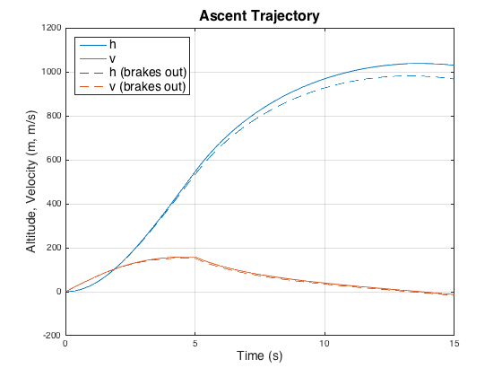
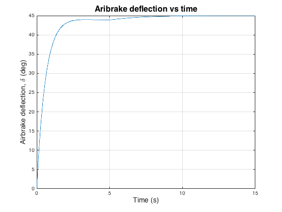

clear;clc;close all
odeOpt = odeset('RelTol', 1e-6, 'AbsTol', 1e-6);
h0 = 0;
v0 = 0;
z0 = 0;
m0 = 10;
del0 = degtorad(0);
deld0 = 0;
x0 = [h0, v0, z0, m0, del0, deld0]';
cnsts.tbo = 5;
cnsts.a = 0;
cnsts.b = -10;
cnsts.c = 700;
cnsts.A = .5;
cnsts.tao = .25;
cnsts.xcp = 0.007;
cnsts.rho = 1.225;
cnsts.Ab = 0.002;
cnsts.Ar = 0.05;
cnsts.n = 4;
cnsts.th = 0;
cnsts.ue = 3000;
cnsts.g = 9.81;
cnsts.Cdb = 0.5;
cnsts.Cdr = 0.5;
cnsts.delmax= pi/4;
cnsts.Ib = 3.6e-5;
tf = 15;
u = 0;
[tout, yout] = ode45(@(t, x) rktdyn(t, x, u, cnsts),[0 tf], x0, odeOpt);
plot(tout,yout(:,1));
hold on
plot(tout,yout(:,2));
ax = gca;
ax.ColorOrderIndex = 1;
u = degtorad(45);
[tout, yout] = ode45(@(t, x) rktdyn(t, x, u, cnsts),[0 tf], x0, odeOpt);
plot(tout,yout(:,1),'--');
hold on
plot(tout,yout(:,2),'--');
title('Ascent Trajectory', 'FontSize', 16)
leg = legend('h','v','h (brakes out)','v (brakes out)');
set(leg,'FontSize', 14, 'Location', 'northwest');
xlabel('Time (s)', 'FontSize', 14)
ylabel('Altitude, Velocity (m, m/s)', 'FontSize', 14)
grid on
figure
plot(tout,radtodeg(yout(:,5)));
title('Aribrake deflection vs time', 'FontSize', 16)
xlabel('Time (s)', 'FontSize', 14)
ylabel('Airbrake deflection, \delta (deg)', 'FontSize', 14)
grid on
 